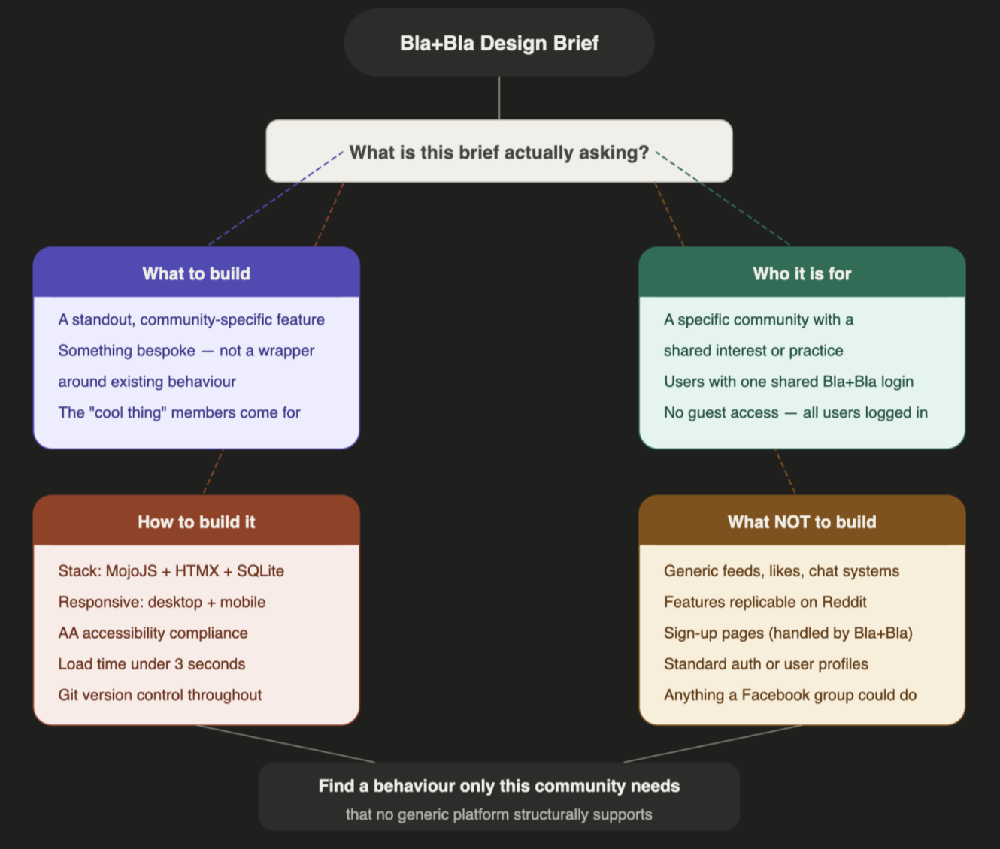
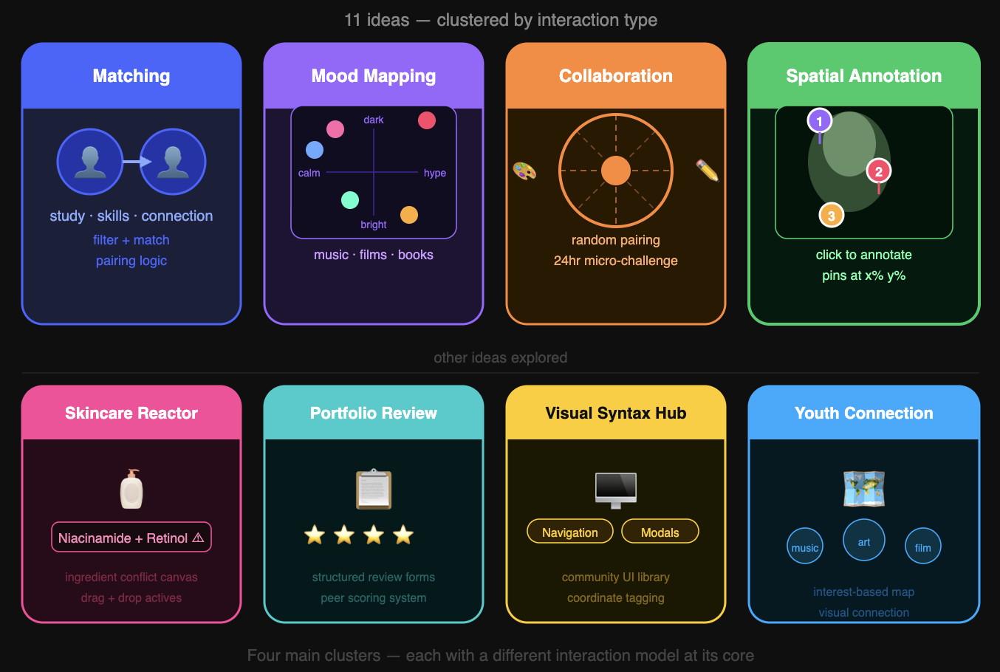

The Bla+Bla brief initially appears open-ended, but its constraint is actually quite strict: do not build another generic social media platform. The requirement is not to recreate feeds, likes, or chat systems, but to identify a community-specific behaviour that existing platforms fail to support. The brief is less about features and more about uncovering unmet needs — and crucially, the standout feature must only make sense for a particular community. This became the core filter for evaluating all ideas.

Figure 1: Deconstructing the Bla+Bla brief — four constraint layers that shaped how I evaluated every idea.Reading the Brief as a Design Constraint
Most briefs tell you what to build. This one tells you what not to build — and that is a harder, more useful instruction.
The Bla+Bla brief rules out feeds, likes, profiles, and chat. It rules out features that would work just as well on Reddit. It rules out anything that requires a community to already exist before the feature is useful. What remains after those eliminations is a very narrow target: one behaviour, for one community, that only makes sense in this specific context.
That framing shifted how I approached ideation entirely. The question was not "what would be useful?" but "what would be useless everywhere except here?" That is a much harder question — and it eliminated most ideas before they were fully formed.
The four constraints I derived from the brief — community specificity, non-generic interaction, technical feasibility, and scope stability — are not equally weighted. The first two are filters. The last two are constraints. An idea that fails the first two is rejected. An idea that passes them but fails the last two is deferred, not discarded. That distinction mattered when evaluating Collab Roulette — a genuinely novel idea that failed on scope stability alone, not on community or interaction quality.
Generating Ideas
Starting from that constraint, I generated 11 concepts across different communities. Rather than listing all of them, the ideas clustered into four categories:
Matching and exchange concepts — study buddy matcher, skill swap board, youth connection map. Real communities, but core interactions already exist on LinkedIn and Reddit. Familiar patterns in new clothes.
2D mood mapping concepts — shared emotional maps for music, films, or books, where users place items on a canvas by mood or atmosphere. Genuinely novel across all three variations.
Creative collaboration concepts — Collab Roulette, randomly pairing two creatives for a 24-hour micro-challenge. Exciting and original.
Spatial annotation concepts — Critique Canvas, a click-to-annotate feedback layer for artwork. And a similar idea applied to UI patterns for design students.

Figure 2: All 11 ideas visualised by cluster — each category has a different interaction model at its core.Applying the Brief's Filter
Running all ideas through three criteria derived from the brief eliminated most quickly:
- Community specificity — does it solve a real niche need?
- Non-generic interaction — not replicable on Reddit or Instagram
- Technical feasibility — fits the MojoJS, HTMX, SQLite stack
Matching concepts failed immediately — their interactions are not community-specific enough. Mood mapping concepts were genuinely novel but all depended on external APIs. If Spotify rate-limits, if TMDB changes schema, the core interaction breaks. That structural risk rules them out for a prototype assessed on stability.
Three ideas survived: Collab Roulette, VibeShelf, and Critique Canvas. The next post explains how we chose between them — and why the decision came down to scope stability, not creativity.
Ambiguities and Open Questions
Even before narrowing to one idea, constraints were visible:
- Which communities have pain points existing platforms structurally cannot solve — not just choose not to
- Whether the core interaction needs external dependencies
- Whether the feature is scoped for stability or requires complex real-time logic
The brief is not a checklist. It is a set of elimination criteria — and most ideas fail them.